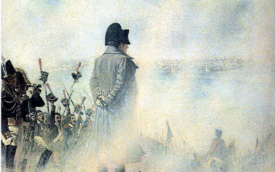

Москва
Решение оставить Москву было принято на военном совете в Филях 13 сентября 1812 года. Михаил Кутузов решительно отверг предложение генералов дать решающее сражение у стен Москвы, решив сохранить армию, растянувшуюся на большой территории и обремененную обозами и раненными. Французам объявили о намерении оставить город, а потому они даже согласились не препятствовать отступлению русских частей. На деле получилось так, что французский авангард встречался с русским арьергардом. Однако встречи эти проходили без кровопролития.
Французы вошли в город со стороны Поклонной горы, откуда открывается великолепная панорама Москвы. Именно здесь Наполеон ждал встречи с делегацией горожан, но навстречу ему никто не вышел. То же самое произошло с французами и у Камер-Коллежского вала у реки - делегации не было. Армия продолжила движение и нашла город полностью опустевшим. Даже Наполеон не мог скрыть своего разочарования - император привык к торжественным приемам. Ушли, однако, не все москвичи. По мнению историков, в городе оставалось до 10 тысяч человек (при том, что по данным полиции в 1812 году в городе проживало около 300 тысяч человек). Оставшиеся жители находились в глубокой оппозиции к оккупантам, именно их французы потом будут ловить и расстреливать за поджоги. Но об этом далее...
Победа ли?
Наполеон занял парадные покои Александра I в Кремле. Известно, что на коне он объехал территорию Кремля и окрестности. Армия же расселилась по городу. Вынужденное бездействие стало началом повального пьянства и мародерства. Жители, покидавшие Москву, бросили все, не имея возможности увезти с собой ценности, которые теперь разграблялись. Ограблены были церкви, в том числе и находящиеся на территории Кремля. Драгоценные металлы церковных окладов переплавлялись прямо в стенах храмов, сами иконы подвергались поруганию. Но армия Наполеона охотилась не только за богатствами, но и за вином. Солдаты грабили погреба и устраивали попойки. Неизвестно, пытались ли французские генералы внедрить дисциплину, но судя по итогам, вразумить своих солдат у них не получилось.
Пожар Москвы
Пожары в городе начали вспыхивать тут и там еще с первого дня оккупации. Французы, уверенные в том, что жители поджигают город намеренно, отлавливали попавшихся им под руку москвичей. Но пожары не прекращались. Способствовала этому и погода - 15-16 сентября в Москве бушевал сильный ветер, распространяющий огонь. Выгорел центр близ Кремля, район Лубянки, пожар перекинулся в Замоскворечье. В то время Москва была, преимущественно, деревянная. По мнению исследователей, пожар уничтожил около 25 тысяч домов. Наполеон в целях безопасности переехал из Кремля в Петровский путевой дворец.
Пожар утих к 18 сентября - тогда Наполеон принял решение вернуться в Кремль с твердым намерением перезимовать в Москве. В городе даже была создана полиция и орган местного управления. За время оккупации три раза французский император пытался заключить мир с русским царем на выгодных для себя условиях и три раза не получал ответа. Тем временем надвигались холода, таяли запасы продовольствия.
Отступление
Потеряв всякую надежду заключить мир, Наполеон принял решение оставить город. Перед этим он приказал сжечь большую часть зданий, Кремлевский дворец, а также взорвать Кремлевские стены. Только благодаря суматохе, французам не удалось в полной мере осуществить приказ своего императора.
Непобедимая когда-то армия отступала по Старой Калужской дороге не в лучшем виде. Наполеон надеялся прорваться в незатронутые войной области, но встреченный частями укрепившейся русской армии, вынужден был отставить этот план. Награбленное сбрасывалось по дороге, французы страдали от голода и холода. Именно тогда в русском языке и появилось обидное прозвище "шаромыжник": голодные французские солдаты, в поисках еды обращались к местным жителям словами "cher ami" (милый друг), крестьяне по-своему переиначили это обращение.
Что же касается пожаров, до сих пор нет единого мнения, кто был их виновником, однако, несомненно они стали символом сопротивления русского народа и произвели тягостное впечатление на Наполеона.